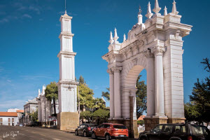

It isn't necessary to search to find places of interest in Sucre - Bolivia. The historic center, which has 1km2 and is a UNESCO World Heritage Site, is a living museum where just by leaving the hotel you are transported back to the colony or the republic.
Typical dishes are:
- Chorizo Portuano
- Mondongo
- Picante de Pollo
- Karapecho